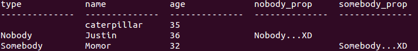

如果採取的是物件模型的方式來設計程式，那麼繼承關係可能就會在程式設計中出現，然而關聯式資料庫的關聯模型與物件模型並不匹配，例如若模型有以下的繼承關係：
# user.rb
class User < ActiveRecord::Base
end
# nobody.rb
class Nobody < User
end
# sombody.rb
class Somebody < User
end
為了映射物件模型與關聯模型，來看看繼承關係映射至關聯式資料庫的方式之一：Single-Table Inheritance。這種方式使用一個表格儲存同一個繼承階層的所有類別，並使用額外的欄位來表示所記錄的是哪一個子類別的資料，具體來說，對於繼承User類別的Nobody及Somebody，可以設計以下的表格來儲存資料：
class CreateUsers < ActiveRecord::Migration
def change
create_table :users do |t|
t.string :name
t.integer :age
t.string :nobody_prop
t.string :somebody_prop
t.string :type # 必須有個type欄位
t.timestamps
end
end
end
最主要的是多了一個type欄位，如果要儲存的資料是來自
Nobody，則在type記下一個型態說明"Nobody"字串，表示該筆資料為
Nobody的對應資料。如果要儲存的資料是來自
Somebody，則在type記下一個型態說明"Somebody"字串，表示該筆資料為
Somebody的對應資料。如果要儲存的資料是來自
User，則在type為空。
當模型有繼承關係時，Rails預設就是採取Single-Table Inheritance對應，假設分別儲存了
User、Nobody與Somebody實例，例如：
User.create(:name => "caterpillar", :age => 35)
Nobody.create(:name => "Justin", :age => 36, :nobody_prop => "Nobody...XD")
Somebody.create(:name => "Momor", :age => 32, :somebody_prop => "Somebody...XD")
那麼資料表格會如下所示：

缺點就是，因子類別屬性的不同，對映儲存時會有許多欄位為空，較浪費資料庫空間，但查詢效率較好，例如查詢所有User類型的資料時，只需一次SQL，例如：
irb(main):001:0> User.all
User Load (0.6ms) SELECT "users".* FROM "users"
=> [#<User id: 1, name: "caterpillar", age: 35, nobody_prop: nil, somebody_prop: nil, type: nil, created_at: "2012-02-15 02:46:18", updated_at: "2012-02-15 02:46:18">, ...略]
|
可以看到
User.all只會下一次的SQL語句。如果是查詢個別子類型資料，則會以WHERE子句比對type型態，例如：
irb(main):002:0> Somebody.all
Somebody Load (2.0ms) SELECT "users".* FROM "users" WHERE "users"."type" IN ('Somebody')
=> [#<Somebody id: 4, name: "Momor", age: 32, nobody_prop: nil, somebody_prop: "Somebody...XD", type: "Somebody", created_at: "2012-02-15 02:47:32", updated_at: "2012-02-15 02:47:32">]
|
如果實際上
User不允許實例化，只是作為共同屬性定義的抽象父類別。例如：
# user.rb
class User < ActiveRecord::Base
self.abstract_class = true
end
# nobody.rb
class Nobody < User
end
# sombody.rb
class Somebody < User
end
那麼就不能使用單表繼承映射，
Nobody與Somebody必須有自己的nobodies與somebodies表格。例如：
class CreateNobodies < ActiveRecord::Migration
def change
create_table :nobodies do |t|
t.string :name
t.integer :age
t.string :nobody_prop
t.timestamps
end
end
end
class CreateSomebodies < ActiveRecord::Migration
def change
create_table :somebodies do |t|
t.string :name
t.integer :age
t.string :somebody_prop
t.timestamps
end
end
end
因為
User不能實例化，所以不用建立users表格，這樣的實作策略為Table per Concrete Class，給予每個具體子類別一個表格，雖不會浪費欄位在不同子類別屬性上，但每個表格中有一些語義相同的欄位，例如name欄位，當領域模型物件修改時，這些相同語義的欄位就要同時跟著修改，多個表格共用相同語義，將造成維護上的困難，而且也無法進行
User.all的多型查詢。
Rails並不支援多表繼承策略，僅能就需求作某種程度的模擬，例如使用
多型關聯 概念來模擬，像是
Multiple Table Inheritance with ActiveRecord 中的例子，在設計上將父類別中的共用定義抽出為共同參考的模型，並透過
include將共同定義含括（
include就某種意義上，也算是一種繼承概念）。